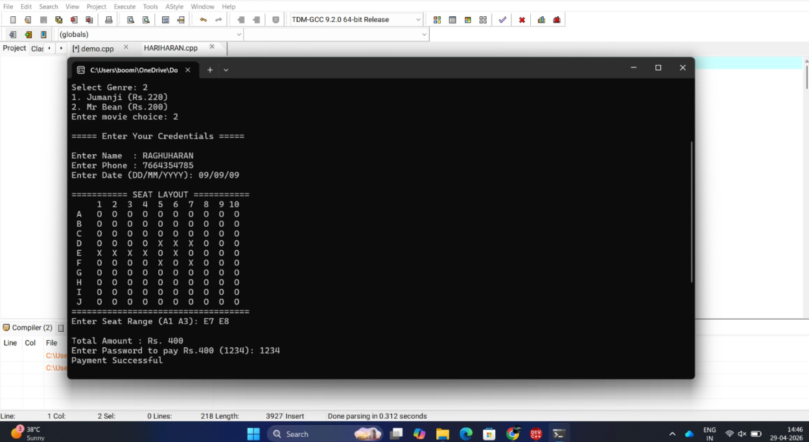
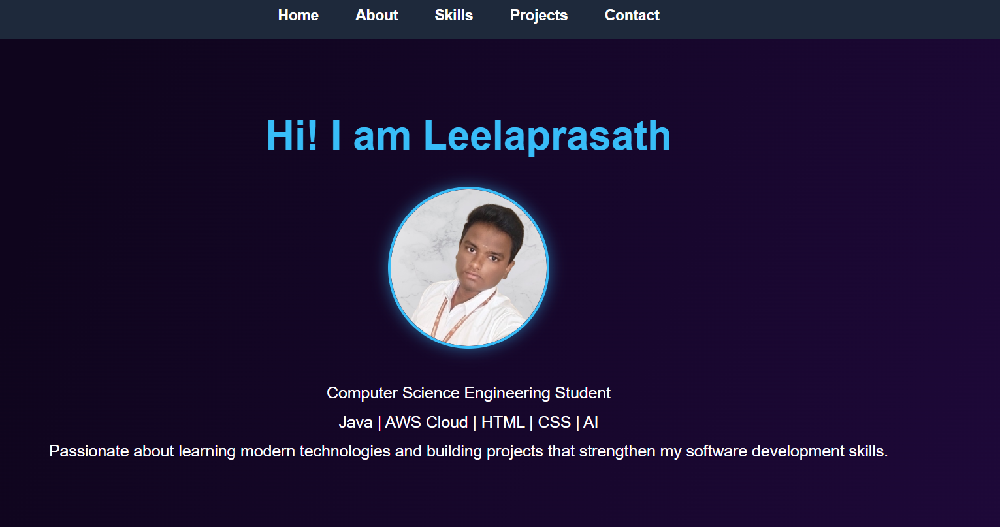

These projects reflect my learning journey in software development, artificial intelligence, and problem-solving through practical implementation.

A console-based application developed in C++ that allows users to view available movies, book tickets, select seats, and calculate ticket costs through an interactive menu system.
Technologies: C++, Object-Oriented Programming
An AI-powered healthcare chatbot developed using BioMistral LLM and PubMedBERT embeddings. The chatbot provides heart-health-related information through Retrieval-Augmented Generation (RAG).
Technologies: Python, RAG, BioMistral, PubMedBERT

A responsive portfolio website built using HTML and CSS to showcase my projects, skills, certifications, and learning journey.
Technologies: HTML, CSS